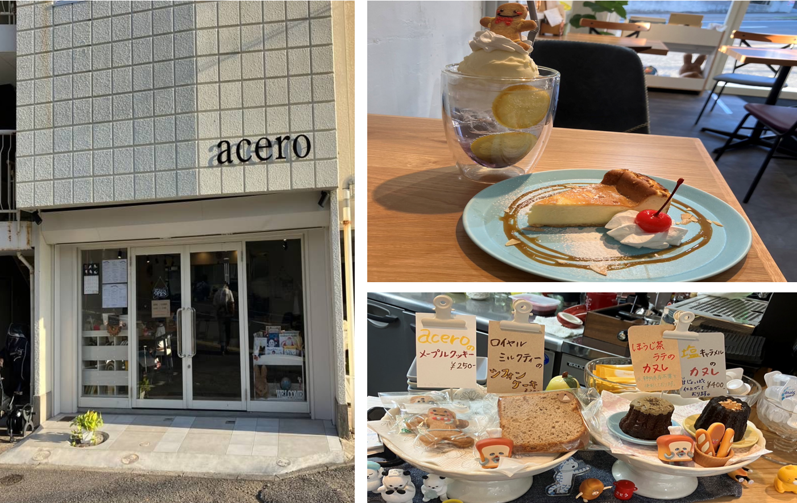

[Masseria Cafe]
ハンバーガー、パスタ、カレー、ガパオライス、ナシゴレン、パン類などのご飯ものから、デザートのケーキまで多ジャンルな料理を提供！

基本情報
営業時間: 11:00 ~ 17:00定休日: 火曜日
Instagram: https://www.instagram.com/masseriacafe/
アクセス
住所: 〒274-0824千葉県船橋市前原東１丁目１５−３５
JR津田沼駅 徒歩11分
TEL: 047-455-7700
ハンバーガー、パスタ、カレー、ガパオライス、ナシゴレン、パン類などのご飯ものから、デザートのケーキまで多ジャンルな料理を提供！
地下にあり隠れ屋のようで落ち着く空間で、淹れたてのコーヒーが美味しく、アップルパイや大きなクッキーも絶品！さらに韓国語レッスンや英会話レッスンも開催！Wi-Fiもあるので作業スペースとしようしても◎

小さなお子様から年配の方まで利用可能！待ち時間に絵本を読むことができ、懐かしい気持ちになれる空間！
